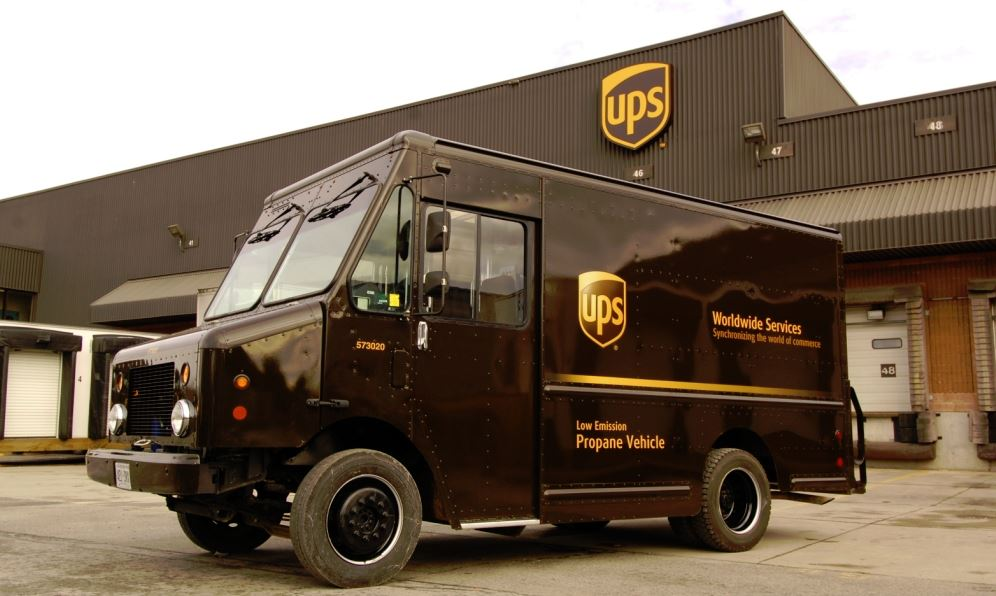

UPS fue fundada en 1907 en Seattle, Washington, por James E. Casey y Claude Ryan. La empresa comenzó como un servicio de mensajería local, pero rápidamente se expandió a otros estados de la costa oeste. En 1919, UPS se convirtió en una empresa pública y comenzó a expandirse a otros países.
Hoy en día, UPS es una de las empresas de transporte de mercancías más grande del mundo, con operaciones en más de 220 países y territorios. La empresa emplea a más de 500.000 personas y transporta más de 15 millones de paquetes al día.
